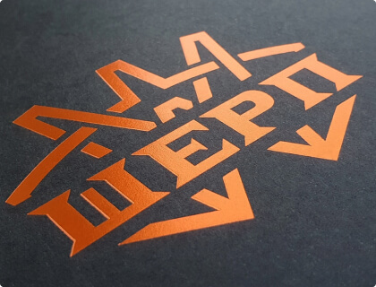

Шелкография (трафаретная печать)
Печать шелкографией — самая популярная и универсальная технология нанесения изображений на бизнес-подарки и промопродукцию. Этим методом логотип или рекламное сообщение можно нанести почти на любой материал — хлопок, нейлон, полиэстер, пластик, стекло, искусственную кожу, дерево и бумагу. Шелкографию применяют для печати практически на всех видах промопродукции от футболок, зонтов и сумок до брелков, зажигалок и упаковки.
Печать по текстилю (футболки, одежда, сумки, зонты и т.п.). Цены на печать до формата А4
Расчётный срок: 5 дней
| Тираж (шт.) / Цветность | 1 цвет | 2 цвета | 3 цвета | 4 цвета | 5 цветов | 6 цветов | полноцвет |
|---|---|---|---|---|---|---|---|
| 100 | 199,9 | 199,9 | 199,9 | 199,9 | 199,9 | 199,9 | 199,9 |
| 200 | 199,9 | 199,9 | 199,9 | 199,9 | 199,9 | 199,9 | 199,9 |
| 300 | 199,9 | 199,9 | 199,9 | 199,9 | 199,9 | 199,9 | 199,9 |
| 400 | 199,9 | 199,9 | 199,9 | 199,9 | 199,9 | 199,9 | 199,9 |
| 500 | 199,9 | 199,9 | 199,9 | 199,9 | 199,9 | 199,9 | 199,9 |
| 1000 | 199,9 | 199,9 | 199,9 | 199,9 | 199,9 | 199,9 | 199,9 |
| 2000 | 199,9 | 199,9 | 199,9 | 199,9 | 199,9 | 199,9 | 199,9 |
| 3000 | 199,9 | 199,9 | 199,9 | 199,9 | 199,9 | 199,9 | 199,9 |
| 5000 | 199,9 | 199,9 | 199,9 | 199,9 | 199,9 | 199,9 | 199,9 |
*Указаны цены на печать изображений до формата А4.
*Свыше А4 — +30%.
*Печать подложки +1 цвет.
*Указана стоимость нанесения без стоимости материала.
*Полноцветная печать - примерно +50% к стоимости 4-х цветов нанесения.
*Печать сплошных заливок площадью более 30% - коэф. 1,3; более 50% - коэф. 1,6
*Печать на пластике, коже или кожзаме - коэф. 1,3
*При печати на наклейке умножаем цену на 2.
*Печать по цифровой печати (т.е. сначала на цифре напечатали, а потом впечатка шелкографией или покрытие лаком) - наценка 120%.
*Печать на тишью +180%.
*Уникальные и особо сложные работы тарифицируются индивидуально.
*Наценка за срочность +50%
*Печать на материалах заказчика - наценка 30%.
*Указаны цены на печать с подготовленного к печати макета.
*Цены указаны в рублях с учетом НДС (20%).
На 01.07.2021
Печать по текстилю (футболки, одежда, сумки, зонты и т.п.). Цены на печать до формата А4
Расчётный срок: 5 дней
| Тираж (шт.) / Цветность | 1 цвет | 2 цвета | 3 цвета | 4 цвета | 5 цветов | 6 цветов | полноцвет |
|---|---|---|---|---|---|---|---|
| 100 | 199,9 | 199,9 | 199,9 | 199,9 | 199,9 | 199,9 | 199,9 |
| 200 | 199,9 | 199,9 | 199,9 | 199,9 | 199,9 | 199,9 | 199,9 |
| 300 | 199,9 | 199,9 | 199,9 | 199,9 | 199,9 | 199,9 | 199,9 |
| 400 | 199,9 | 199,9 | 199,9 | 199,9 | 199,9 | 199,9 | 199,9 |
| 500 | 199,9 | 199,9 | 199,9 | 199,9 | 199,9 | 199,9 | 199,9 |
| 1000 | 199,9 | 199,9 | 199,9 | 199,9 | 199,9 | 199,9 | 199,9 |
| 2000 | 199,9 | 199,9 | 199,9 | 199,9 | 199,9 | 199,9 | 199,9 |
| 3000 | 199,9 | 199,9 | 199,9 | 199,9 | 199,9 | 199,9 | 199,9 |
| 5000 | 199,9 | 199,9 | 199,9 | 199,9 | 199,9 | 199,9 | 199,9 |
*Указаны цены на печать изображений до формата А4.
*Свыше А4 — +30%.
*Печать подложки +1 цвет.
*Указана стоимость нанесения без стоимости материала.
*Полноцветная печать - примерно +50% к стоимости 4-х цветов нанесения.
*Печать сплошных заливок площадью более 30% - коэф. 1,3; более 50% - коэф. 1,6
*Печать на пластике, коже или кожзаме - коэф. 1,3
*При печати на наклейке умножаем цену на 2.
*Печать по цифровой печати (т.е. сначала на цифре напечатали, а потом впечатка шелкографией или покрытие лаком) - наценка 120%.
*Печать на тишью +180%.
*Уникальные и особо сложные работы тарифицируются индивидуально.
*Наценка за срочность +50%
*Печать на материалах заказчика - наценка 30%.
*Указаны цены на печать с подготовленного к печати макета.
*Цены указаны в рублях с учетом НДС (20%).
На 24.12.2019
Общая информация
Прямая трафаретная печать – шелкография – один из наиболее популярных способов нанесения изображений на сувенирную продукцию. TooManyGifts в Санкт-Петербурге предлагает низкую стоимость печати на заказ при больших тиражах (от 50-100 экземпляров).
Техника шелкографии пользуется большой популярностью при печати визиток, для брендирования курток, футболок, палаток, зонтов, пледов, брелоков, зажигалок, различных упаковочных материалов и прочего.
Преимущества нанесения логотипа методом шелкографии:
- насыщенные и яркие цвета, в том числе по стандартизированной системе Pantone;
- четкие контуры изображений;
- возможность печати на материалах с различными фактурами: бумаге, ткани, искусственной коже, пластике, стекле, дереве, железе, пленке и т. д.;
- устойчивость изображений к изломам и истиранию;
- возможность печати флуоресцентными, люминесцентными, металлизированными и ароматизированными красками, в том числе с выборочной лакировкой;
- возможность создания пуф-эффектов и объемных изображений.
Технология
На прямоугольную раму натягивают сетку. На нее наносят специальную фотоэмульсию, после чего, используя специальные лампы и позитив, добиваются частичного отвердения состава с целью получения трафарета.
При помощи движущегося рекеля через трафарет продавливают краску на запечатываемую поверхность. Оттенки наносятся по очереди. Пигмент высыхает самостоятельно либо под действием специальных устройств.
Для печати на различных материалах применяются разные типы красок со специальными присадками. Текстиль, опечатанный методом шелкографии, рекомендуется гладить с изнаночной стороны.
Фактурные изображения
Фактурных изображений добиваются путем нанесения достаточно толстого слоя специальной пластичной краски, которая сохраняет исходные характеристики изделий.
Точное соответствие палитре Pantone
Для получения максимально точных оттенков цветовой модели Pantone используют белую подложку.
Технологические ограничения
Технологическим ограничением для метода шелкографии является невозможность получения полноцветных изображений фотографического качества. В то же время, рисунок выглядит высокоэстетичным. Профессиональный подбор запечатываемых поверхностей и параметров изображения позволяет добиваться максимальных визуальных результатов.
Метод не может быть использован для нанесения рисунков на слишком вогнутые и выгнутые поверхности. Исключением являются кружки, для запечатывания которых используются специальные радиальные установки.
Запечатке поддаются не все материалы, поэтому образцы заказчика всегда тестируются нами на адгезию краски. Совместимые методы нанесения изображений указаны на карточках товаров из нашего каталога.
Прочие технологические ограничения указаны в «Требованиях к макетам».
Требования к макетам
Допустимые форматы файлов
-
Векторные:
- .cdr — CorelDraw (версия не старше 15);
- .pdf — Adobe PDF;
- .ai — AdobeIllustrator (версия не старше СS4);
- .eps — EPS (версия не старше СS4.
-
Растровые (для полноцветной печати шелкографией):
- .tiff (все слои должны быть слиты);
- .psd — AdobePhotoshop (все слои должны быть слиты);
- .jpeg (.jpg).
Общие требования к электронному макету
- Файлы обязательно должны иметь расширение той программы, в которой были сделаны.
- Все шрифты должны быть переведены в кривые.
- Не рекомендуется использовать шрифты размером меньше 5 pt (при выворотке — менее 6-7 pt).
- Растровые изображения должны быть в режиме Black&White или GrayScale c разрешением не менее 300dpi. Для полноцветной печати шелкографией — цветовая модель CMYK.
- Векторные изображения для полноцветной печати шелкографией не должны иметь каких-либо эффектов и прозрачностей.
Технологические параметры макета
-
Печать на бумаге:
- минимальная толщина линии — 0,1 мм;
- при печати вывороткой пробельный элемент — 0,2 мм;
- для текстурных бумаг минимальная толщина линий увеличивается зависимости от рельефа (консультируйтесь у наших менеджеров);
- максимальный размер печатного поля — 330×500 мм;
- не использовать термоподъём на больших плашках, т.к. он плохо запекается при сушке;
- не использовать термоподъём на элементах на вылет, т.к. возможны заломы и неровный край.
-
Печать по текстилю:
- минимальная толщина линий — 0,25 мм;
- при печати вывороткой пробельный элемент — 0,3 мм;
- максимальное поле печати на крое — 360×500 мм;
- максимальное поле печати на футболке — 360×390 мм.
-
Печать на зонтах:
- минимальная толщина линий — 0,18 мм;
- максимальное поле печати — 300×240 мм.
Пути предоставления исходных электронных материалов
- Переслать в письме на нашу почту (суммарный вес файлов не боле 25Мб).
- Выложить на файл-хостинг (например: Файлы@Mail.ru, суммарный вес файлов не более 100Мб) и отправить нам ссылку на скачивание файла.
- На CD/DVD.
- На любом внешнем USB-носителе (флеш-карта, внешний HDD-диск).
- 